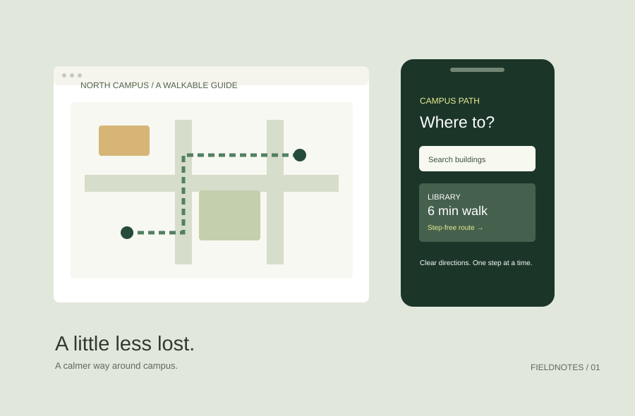

Finding your way, minus the guesswork.
A campus wayfinding concept for the moment when a map shows everything except the next thing you need to do.
- My role
- Research & interaction design
- Collaboration
- Team of three
- Timeframe
- Four weeks
- Status
- Concept / not launched

01. The question
How might a first-time visitor find a campus building without stopping at every intersection? This class brief focused on the walk between the library and the design building, rather than trying to map the entire campus.
02. My part in the team
I planned the observation route, organized our notes and designed the route-detail screens. One teammate built the base map; another led the critique sessions. We made the final information hierarchy together.
03. What we noticed
For this fictional project, our sample notes describe people searching for a familiar landmark before reading a building code. That led to a working hypothesis: the route should begin with a recognizable place and describe one decision at a time.
The useful question wasn’t “How much can this map show?” It was “What does someone need to know next?”
04. From map-first to next-step-first
The first concept opened on a detailed map. In the revised concept, a destination card answers three questions before showing directions: which entrance, how long a walk, and whether the route includes steps. The map remains available for orientation.
05. What I would test next
This is a prototype, not a deployed navigation product. I would test whether first-time visitors can identify the correct entrance and explain their next turn without help. A real release would require verified access information and route maintenance.
06. What I learned
A smaller scope made the design decisions easier to explain. I would spend more time defining what “arrived” means: reaching a building is different from finding the right entrance.
Inside the project notebook
Observation notes
Route, moment of uncertainty, question asked and the environmental cue used. Keep observations separate from interpretations.
Decision log
We prioritized entrance information over map detail. The trade-off: less geographic context on the first screen.